地政学
ヴェネツィアはアドリア海の潟から東地中海交易を支配した都市で、現在も港、空港、鉄道、本土工業地を通じて欧州と海を結ぶ。国家首都ではないが、文化外交、遺産保護、海面上昇の議論で国際的な重みを持つ都市である。

🇮🇹 イタリア / 南ヨーロッパ / World City Atlas
アドリア海の潟に浮かぶ都市は、海洋共和国の記憶、巡礼と芸術、観光圧力、港湾と本土、高潮と気候変動、住民の日常が一枚の水面に映る世界的な遺産都市である。
都市の骨格
ヴェネツィアは観光の舞台である歴史地区だけではなく、メストレ、マルゲーラ港、島々、鉄道、空港、潟の生態系を合わせて成り立つ都市圏である。美しい水辺と生活の維持費が、常に同じ問題として現れる。
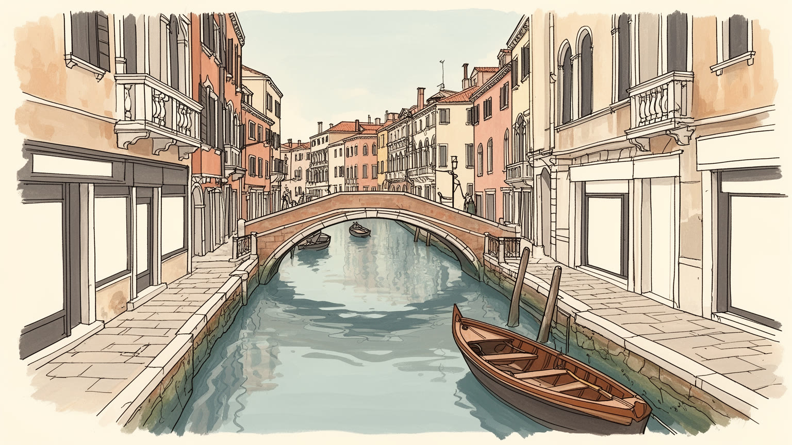
ヴェネツィアはアドリア海の潟から東地中海交易を支配した都市で、現在も港、空港、鉄道、本土工業地を通じて欧州と海を結ぶ。国家首都ではないが、文化外交、遺産保護、海面上昇の議論で国際的な重みを持つ都市である。
観光、宿泊、飲食、港湾、海運、大学、文化財修復、ムラーノのガラス、建設維持、公共交通が雇用を支える。華やかな訪問者経済の背後で、清掃、舟運、介護、小売、本土からの通勤労働が水上都市の日常を動かす。
サン・マルコ、教会暦、祝祭、ユダヤ人ゲットー、ビエンナーレ、音楽、絵画、工芸が重なる。カトリックの儀礼と商人都市の国際性は、東方との接触や移民の記憶を含み、信仰と芸術を観光以上の生活文化にしている。
住民は徒歩、橋、ヴァポレット、小舟、近所の市場、学校、診療所を使い分け、旅行者は広場、運河、美術館、島々を巡る。短期滞在の集中、住宅費、店舗の観光化、高潮は、暮らし続ける都市の条件を問い直す日々である。
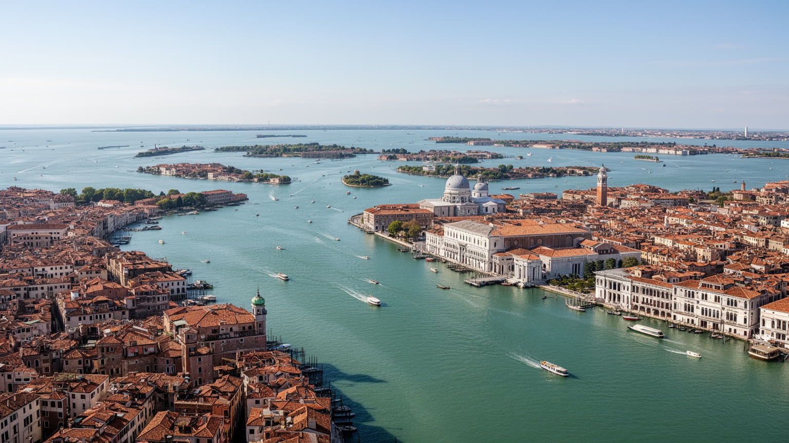
ヴェネツィアを理解する出発点は、アドリア海と本土の間に横たわる浅い潟である。歴史地区は島々を橋でつないだ石の街に見えるが、その下には木杭、泥、潮汐、運河の維持、干潟の生態系がある。外海から少し守られた水域は、かつて防衛と交易に有利な場所を作り、船、塩、魚、東地中海との接触を都市の基礎にした。いまも鉄道と道路の橋、空港、本土のメストレ、工業港マルゲーラ、リド島、ムラーノやブラーノの島々が、潟を一つの都市圏にしている。だが潟は固定された舞台ではない。航路の浚渫、巨大船、護岸、高潮対策、湿地の消失、汚染、潮流の変化が、景観と安全を同時に左右する。徒歩で橋を渡る観光客には近く見える距離も、住民の通勤、救急、荷物運搬、学校通いでは複雑な時間になる。水は都市を美しく見せるだけでなく、建物の基礎、交通費、生活物価、行政サービスの配り方を決める条件である。さらに潟は渡り鳥、漁業、塩性湿地、島の農地を抱え、自然保護と都市利用の境界を日々変える。堤や水門の選択は、中心部だけでなく周辺島の暮らしにも影響する。潮の満ち引きは、広場の歩き方から船の時刻まで細かく変える。潟の地理を読むことは、ヴェネツィアを絵画のような孤立した名所ではなく、本土と海、自然と人工、観光と生活が絶えず調整される場所として見ることである。
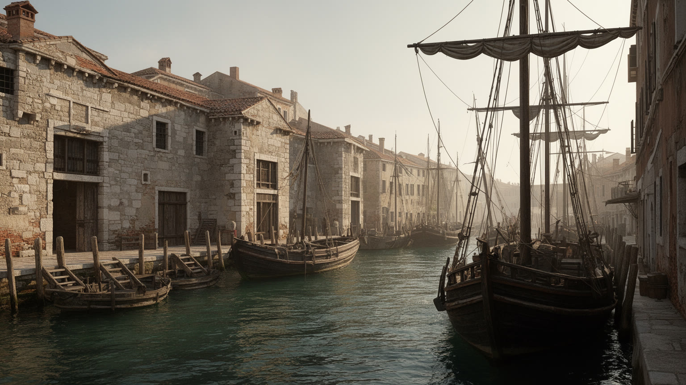
ヴェネツィアの歴史的な力は、土地の広さよりも海を読む能力にあった。中世から近世にかけて、商人、船員、造船工、外交官、金融業者は、アドリア海、ビザンツ、レヴァント、黒海、北イタリアの市場を結び、都市国家の富と政治を支えた。アルセナーレの造船体制は、軍船と商船を供給する巨大な工業装置であり、国家の安全保障と雇用を一体化させた。サン・マルコ広場や総督宮の華やかさは、単なる宮廷文化ではなく、海上交易、植民地支配、外交儀礼、商業情報の集積を可視化した空間である。ヴェネツィアの美術には、東方から来た素材、色、聖遺物、商人の寄進、共和国の自己演出が深く刻まれている。一方で、その繁栄は支配された島や港、船員の危険、奴隷貿易、戦争、疫病の記憶も含む。商業の制度、保険、為替、倉庫、移民商人の居住区は、近代的な都市経済の先駆けでもあった。海図と情報を握ることは、軍事力と同じほど重要な資源だった。その情報は広場、商館、船着き場で人から人へ渡った。今日の観光都市としての名声は、海洋共和国の過去を華麗な背景として消費しがちだが、歴史を読むには、権力、労働、暴力、信仰、技術を同じ水路に置く必要がある。ヴェネツィアは海に開かれた都市であると同時に、海を通じて他者を取り込み、時には支配した都市でもあった。その二重性が現在の遺産の厚みを作る。
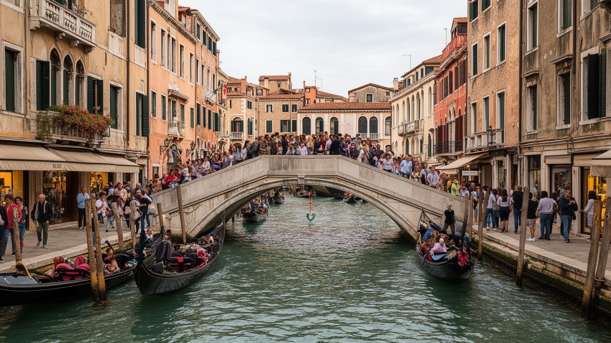
ヴェネツィアの観光は、世界中の人に水上都市の美しさを開く一方、住民の生活基盤を強く圧迫している。サン・マルコ、リアルト、主要な橋や狭い路地には日帰り客が集中し、短時間で写真を撮り、土産物を買い、次の目的地へ移動する。宿泊需要と短期賃貸は住宅を観光用途へ変え、近所の食料品店や修理店を土産物店や飲食店へ置き換える。清掃、警備、案内、ホテル、レストラン、船運の雇用は重要だが、季節性が強く、賃金や通勤時間の負担も大きい。混雑は救急、物流、学校、通勤の動線にも影響し、住民にとって街を歩く自由を狭める。観光客が多いこと自体を単純に否定するのではなく、滞在の質、人数の分散、入域管理、宿泊税、公共交通、廃棄物処理、地域商店の保護を組み合わせる必要がある。クルーズ船の扱いも、水深、波、港湾収入、景観、環境負荷をめぐる政治問題である。入場料や予約制の議論は、都市を閉じるためではなく、限られた空間をどう共有するかを問うものでもある。長く滞在し、島々や本土にも足を延ばす旅は、負荷を分散する可能性を持つ。ヴェネツィアを旅することは、消費される遺産を見ることでもある。訪問者の視線が生活を押し出すなら、都市は舞台だけを残して空洞化する。観光の成功は、住民が残り、働く人が尊重され、日常の商いが続く時に初めて持続する。
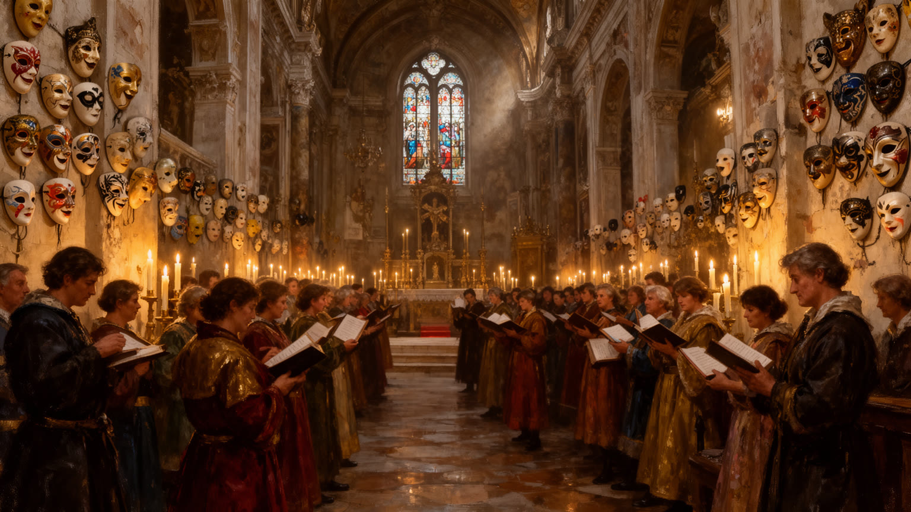
ヴェネツィアの文化は、美術館に収められた名画だけでなく、教会、広場、橋、船、祝祭の動きの中にある。サン・マルコ大聖堂、フラーリ教会、スクオーラ、修道院、運河沿いの宮殿は、信仰、商人の寄進、ギルド、共和国の記憶を重ねてきた。カトリックの典礼、守護聖人の祝日、レデントーレ祭、カーニバル、墓地の島へ向かう動線は、観光イベントである前に、共同体が疫病、救済、死、季節を扱ってきた都市の時間である。ユダヤ人ゲットーの歴史も、信仰と隔離、商業、印刷、記憶を同じ地区に刻む。現代ではビエンナーレ、映画祭、現代美術、建築展が世界の作家と観客を呼び、古い都市を国際文化の実験場に変える。一方で、文化の国際化は高価な宿泊、短期滞在、展示消費を増やし、地元の若者や小さな制作現場を遠ざけることもある。音楽院や劇場、教会の合唱、職人の祭礼は、観光ポスターに出にくい文化の基礎である。広場で人が立ち止まる時間そのものが、都市の公共性を保ってきた。芸術都市としてのヴェネツィアを読むには、聖堂のモザイクと現代展示、工房の技術、宗教行列、音楽学校、島の墓地、観光化した仮面を一つの連続として見る必要がある。儀礼は過去の飾りではなく、住民が水上の不安と記憶を共有する方法でもある。美は生活と切り離された展示物ではなく、共同体を支える実践である。
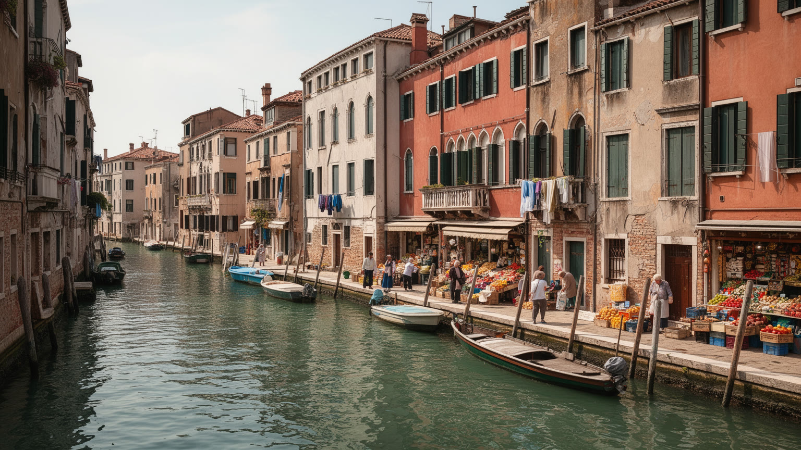
ヴェネツィアの最も深い課題の一つは、歴史地区に住む人が減り続けてきたことである。住宅は短期賃貸や観光宿泊へ転用されやすく、日用品店、学校、診療所、郵便、修理業、近所の食堂が減ると、残った住民の暮らしはさらに難しくなる。階段の多い橋、水上交通の運賃、荷物運搬の手間、湿気、建物維持費、高潮への備えは、普通の家計にとって重い条件である。若い家族は本土のメストレや周辺自治体へ移り、歴史地区には高齢者、観光業従事者、学生、短期滞在者、富裕層の別宅が混在する。住民が減れば、夜の窓の明かり、子どもの声、市場での会話、地域の相互扶助も薄くなる。都市が博物館のように保存されても、日常の用事が残らなければ生活都市としての力は失われる。大学や文化機関は若い人を呼び込むが、卒業後に住み働ける部屋がなければ定着しない。介護や清掃を担う人の通勤時間も、都市の持続性を左右する。町内の小さな会話も、防災や見守りの基盤になる。住宅政策、短期賃貸規制、公共住宅、学生寮、保育、医療、地域商店支援は、遺産保護と同じくらい重要な都市政策である。ヴェネツィアを守るとは、壁や運河の景観を維持するだけでなく、住民が朝にごみを出し、学校へ送り、洗濯物を干し、近所で買い物できる条件を守ることでもある。暮らす人がいるからこそ、訪問者が出会う美しさにも厚みが残る。
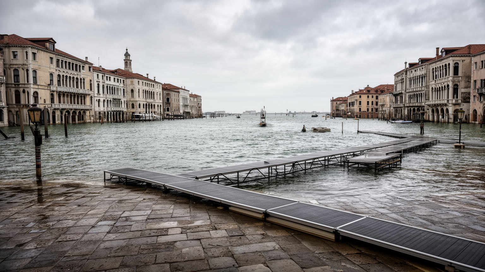
ヴェネツィアの気候と水の問題は、都市の存続そのものに関わる。冬の霧、湿気、高潮、夏の暑さ、蚊、塩分、建物への浸水は、観光の印象よりもずっと実務的な生活条件である。アクア・アルタは広場や路地を水で覆い、店舗、住宅、教会、電気設備、文化財、通勤、学校を同時に揺らす。可動式の防潮システムは大きな浸水を抑える力を持つが、運用費、環境影響、港湾交通、潟の水交換、長期的な海面上昇への限界をめぐる議論が続く。高潮対策は堤防だけでは済まない。建物の床上げ、排水、文化財の保存、湿地再生、船の速度管理、地下水や地盤沈下への対応、避難情報、保険、低所得世帯への支援が必要になる。暑い夏には、石の街路と人の密集が熱をため、労働者や高齢者、観光客の健康にも影響する。気候危機は未来の抽象的な話ではなく、毎年の水位、塩害、修復費、暮らしの不安として現れる。水位予報を見て営業準備を変える店や、防潮板を出す住民の作業は、気候適応が日常労働であることを示す。子どもや高齢者にとっては、避難経路と涼しい場所の確保も重要になる。ヴェネツィアは世界が海面上昇を想像する象徴になりやすいが、象徴として眺めるだけでは不十分である。ここでは技術、自然再生、港湾、住宅、観光管理を同時に調整しなければならない。水と共に生きる都市の知恵が、これからの限界もまた示している。
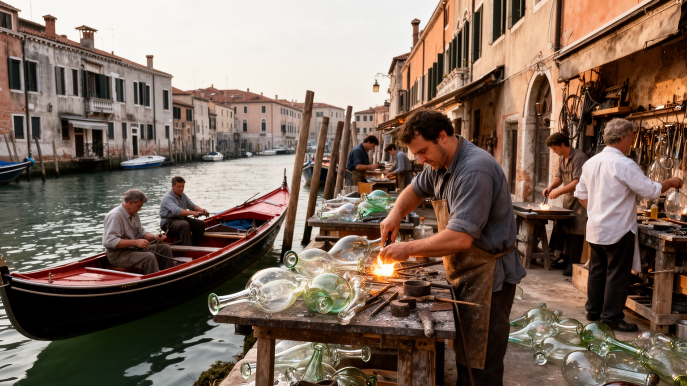
ヴェネツィアの経済は観光の印象が強いが、都市を支えてきた手仕事と専門労働を見落としてはならない。ムラーノのガラス、ブラーノのレース、仮面、装丁、木工、金属加工、船の修理、文化財修復、石工、左官、モザイク、額装、照明、舞台美術は、都市の記憶を技術として受け継ぐ分野である。湿気と塩分にさらされる建物は絶えず手入れを必要とし、運河の岸、橋、床、教会の内部、絵画、彫刻は、職人や修復専門家の知識によって保たれる。だが工房の多くは、家賃、安価な模倣品、観光客の短い消費、後継者不足、材料費、規制の複雑さに苦しむ。手仕事が土産物としてだけ扱われると、技術の時間と労働の価値は見えにくくなる。大学や研究機関、文化財行政、職業学校、家族経営の工房が連携しなければ、技能は都市の外へ流出する。見習いが低賃金で長い修業を続けられる住環境も欠かせない。工房が公開される場合も、実演の消費と職人の尊厳をどう両立させるかが問われる。ヴェネツィアの美しさは、過去に完成したものではなく、いまも修理され続ける作業の結果である。職人の仕事を都市政策の中心に置くことは、観光商品の質を高めるだけでなく、若い住民が歴史地区で働き暮らす理由を作る。ガラスの炉や修復工房に残る熱と手の感覚は、水上都市を単なる写真の対象にしないための力である。
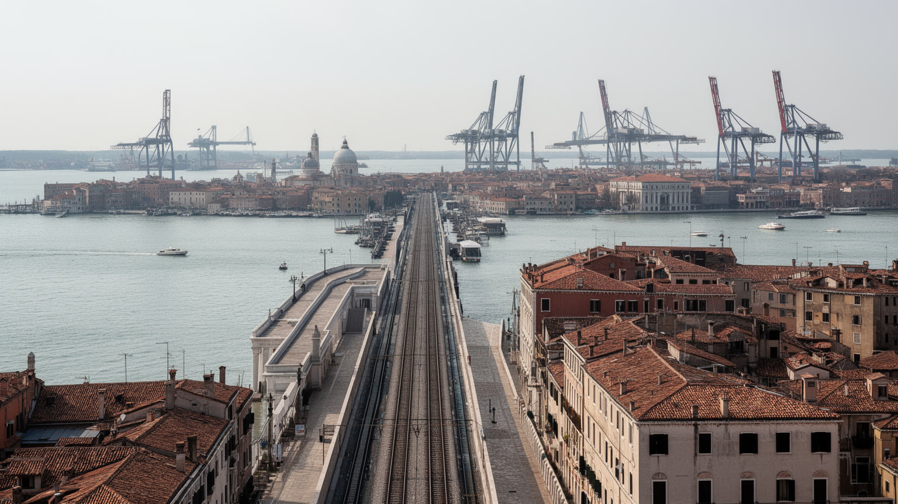
ヴェネツィアを歴史地区だけで見ると、都市圏の現実を取り逃がす。メストレは住宅、商業、鉄道、ホテル、学校、病院の機能を持ち、多くの住民や労働者が本土側で暮らす。マルゲーラ港と工業地帯は、二十世紀に化学工業、造船、物流、エネルギー、倉庫を集め、雇用と同時に汚染、労働災害、環境負荷を残した。現在も港湾、フェリー、貨物、クルーズ関連、鉄道、空港は、観光と地域経済を支える重要な基盤である。水上の美しい街並みは、本土の道路、倉庫、清掃施設、物流、労働者の通勤に依存している。観光客が到着する駅や空港、ホテルの多くも都市圏全体の分業に組み込まれている。港湾政策は、巨大船の入港、環境規制、雇用、景観、潟の水理、地域経済のバランスを問う政治問題である。本土を単なる裏方と見なすと、ヴェネツィアの産業、労働、環境正義は見えない。逆に本土の生活圏を含めて読むと、歴史地区の保存と現代都市の働きがどれほど密接に結びついているかが分かる。通勤鉄道やバス、水上交通の接続は、労働市場と観光動線を同時に支える。港湾跡地の再利用では、文化施設、住宅、緑地、物流機能の配分が将来像を決める。都市の未来は、観光中心部の入場管理だけでなく、本土の住宅、港湾再編、公共交通、汚染地の再生、雇用の質によっても決まる。ヴェネツィアは水上に浮かぶ名所である前に、広い潟と本土が支える複合都市圏である。
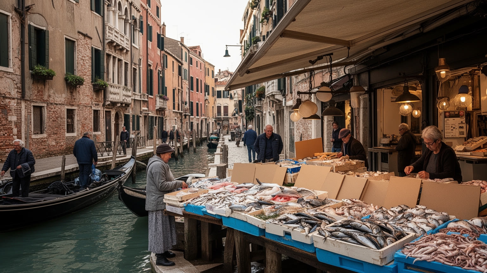
ヴェネツィアの日常は、壮麗な広場だけでなく、市場、バーカロ、小さな橋、洗濯物、船で運ばれる荷物、近所の立ち話にある。リアルト市場の魚介、潟の小魚、野菜、ポレンタ、イカ墨、バッカラ、チケッティ、ワインは、海と本土をつなぐ食の記憶を伝える。バーカロで軽く食べ、立って飲み、狭い路地を歩く習慣は、観光客にも人気だが、もともとは近所の社交と仕事帰りのリズムに根ざしている。食文化が旅行者向けの看板だけになると、価格は上がり、地元の客が通う店は減る。魚市場や食料品店が残るかどうかは、歴史地区に住民が残るかどうかと直結する。学校、診療所、薬局、修理屋、クリーニング、郵便、保育、介護も、食堂と同じく生活都市の基礎である。徒歩と水上交通の都市では、買い物の重さや配達の時間も暮らしの条件になる。観光客が味わう一皿の背後には、早朝の市場、船の燃料、料理人、皿洗い、家賃、廃棄物処理、仕入れの季節変動がある。朝の通学、午後の配達、夕方の立ち飲みは、同じ路地を違う速度で使う。店主が客の顔を覚える関係は、観光化で最も失われやすい都市の財産である。ヴェネツィアの食を読むことは、名物を探すだけでなく、日常の店が観光経済の中で生き残れるかを見ることである。小さな酒場と市場が残る時、水上都市はまだ住む場所として息をしている。
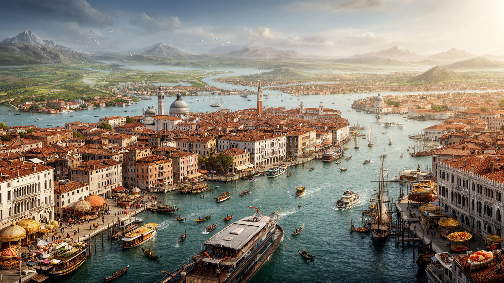
ヴェネツィアは、世界で最も強くイメージ化された都市の一つである。運河、ゴンドラ、サン・マルコ、仮面、宮殿、夕暮れの水面は、訪れる前から人々の記憶にある。しかし、その強いイメージこそが、都市の現実を見えにくくする。ヴェネツィアは過去の美を保存する舞台ではなく、住民の減少、観光圧力、高潮、海面上昇、港湾再編、文化財修復、工芸の継承、本土との分業を毎日調整する都市である。海洋共和国の歴史は華麗だが、そこには労働、支配、疫病、宗教、交易の複雑さがある。観光は都市を支える収入源だが、過剰になれば住宅と商店を奪う。水は美しいが、浸水と塩害を運ぶ。工芸は魅力的な商品だが、若い職人が住めなければ続かない。ヴェネツィアを読むには、写真の中心だけでなく、早朝の清掃船、本土から来る通勤者、学校へ向かう子ども、修復現場、港湾の議論、潮位の表示を同じ都市の出来事として見る必要がある。さらに、訪問者自身もこの調整に関わる存在である。どこに泊まり、どの時間に歩き、何を買い、どの島へ足を延ばすかが、都市の負荷を変える。持続可能なヴェネツィアとは、観光客を遠ざける都市ではなく、訪問の量と質を管理し、住民が残り、潟の生態系を守り、働く人の生活を支える都市である。美しさを未来へ渡すには、眺めるだけでなく、暮らしを成立させる制度を作らなければならない。